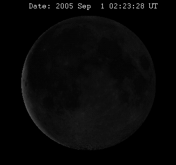
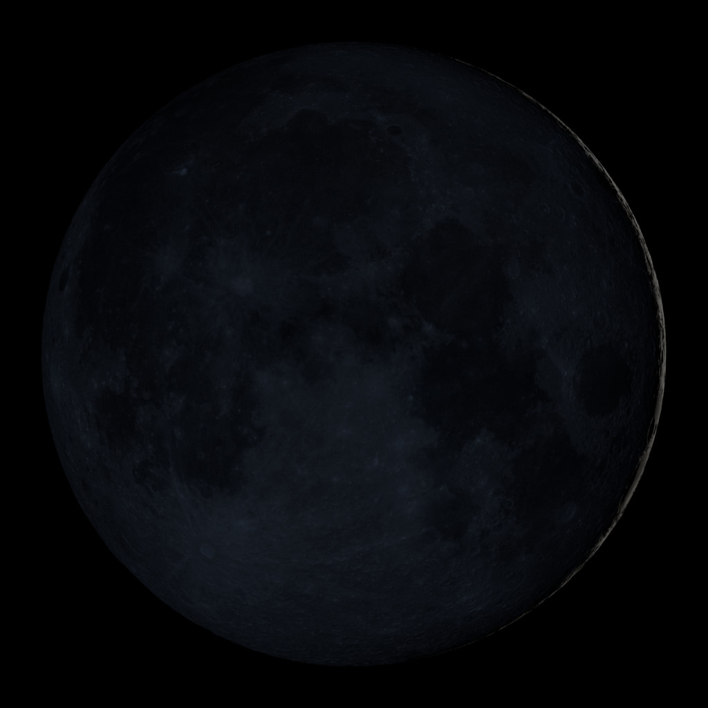
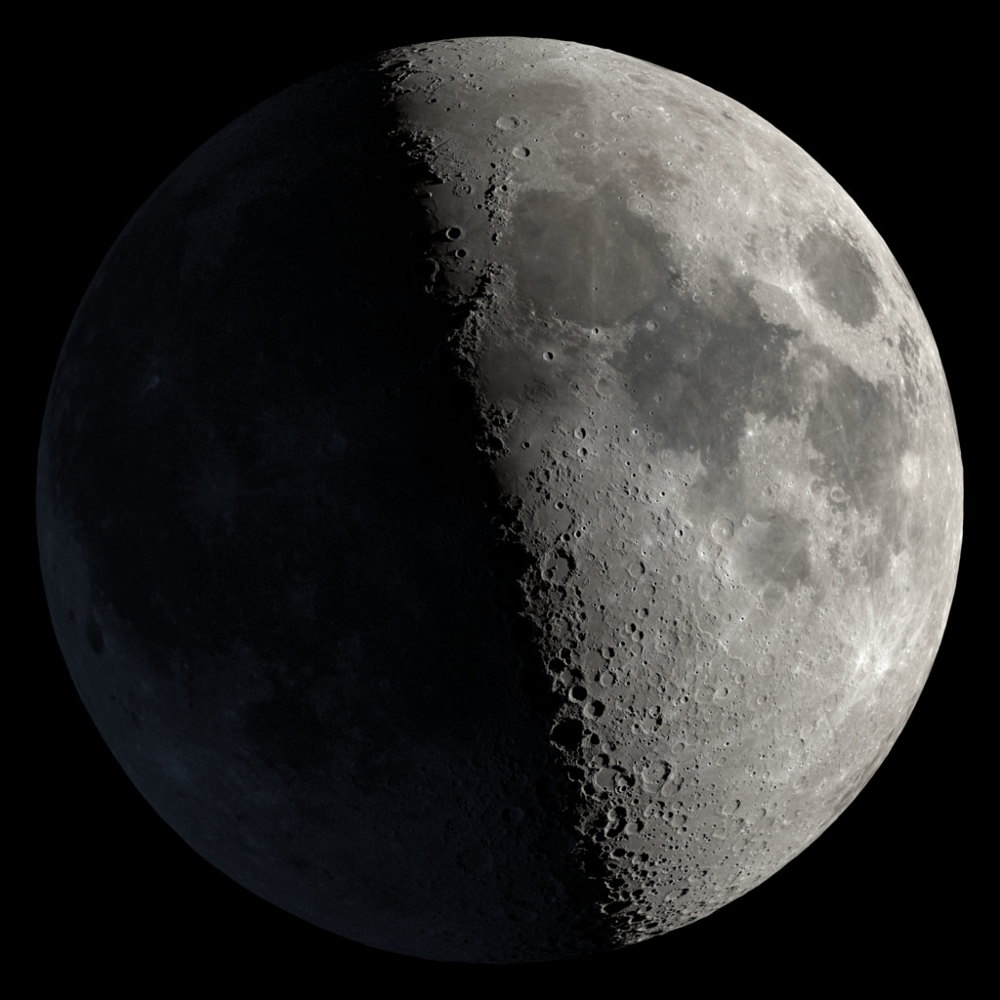

Les 8 phases de la Lune
Un cycle lunaire complet dure environ 29,5 jours — une lunaison.
> Sources <🌑🌒🌓🌔🌕🌖🌗🌘


| Phase de la Lune | Image |
| Nouvelle Lune |  |
| Premier Croissant |  |
| Premier Quartier |  |
| Lune Gibbeuse Croissante |  |
| Pleine Lune |  |
| Lune Gibbeuse Décroissante |  |
| Dernier Quartier |  |
| Dernier Croissant |  |